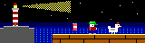

Lieutenant Fizz 2
Local preview. Pick a build to try.
Web version
The WebAssembly build: the richer one, with the wide view, music and effects. Esc opens Paused and Options.
Open the Web buildDOS version (js-dos)
FIZZ2.EXE running in a browser DOS emulator, for quick DOS checks without a native DOSBox. Sound Blaster 16 and AdLib.
Play the DOS buildDOS modes
Note
The browser emulator is a different DOSBox from the one in the checks, and its speed depends on this machine, so its timing and any counts it prints are for looking, not for pinning. The pinned numbers come from tools/check-dos.sh.